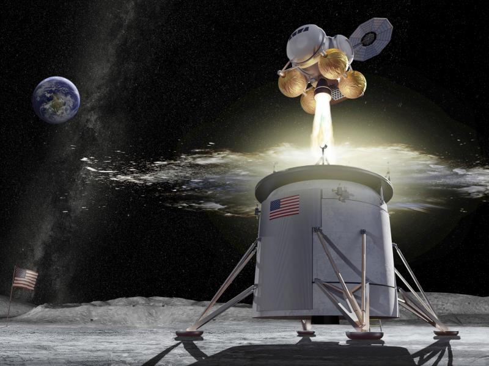

Uzay teknolojileri, insanların uzayda keşif yapabilmesi, araştırmalar gerçekleştirebilmesi ve farklı uzay görevlerini yerine getirebilmesi için geliştirdiği araçlar, yöntemler ve sistemler bütünüdür. Bu teknoloji, roketler, uydular, uzay istasyonları gibi önemli bileşenleri içerir.
Uzay araçları, uzaya yapılan yolculuklar ve keşifler için temel araçlardır. Roketler, atmosferi aşarak uzaya çıkmamıza olanak tanırken, uydular dünya çevresinde dolaşarak iletişim, hava durumu takibi ve daha pek çok alanda hizmet verir.
Son yıllarda özel sektörün de uzay teknolojilerine olan ilgisi artmış, birçok yeni şirket uzay turizmi, Mars’a seyahat ve uzay madenciliği gibi projeler geliştirmiştir. Bu gelişmeler, uzay teknolojilerinin daha erişilebilir hale gelmesini sağlamakta ve gelecekteki uzay araştırmalarını dönüştürmektedir.
Ana Sayfa